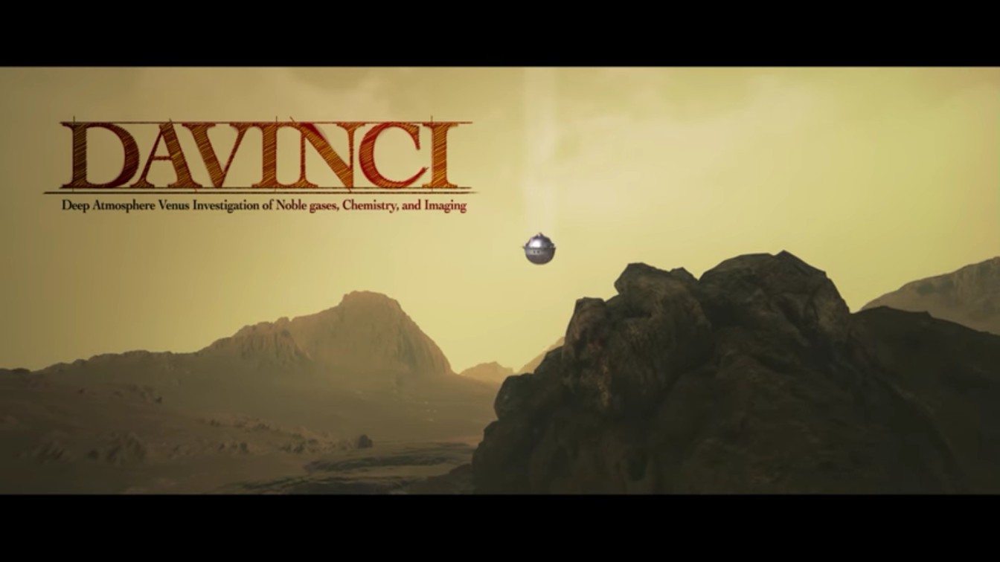

Nasa's DAVINCI Mission to take the plunge through Massive atmosphere of Venus
In recently publishedd paper, Nasa scientists and engineer give new details about the agency's deep atmosphere Venus investigation of the Noble gases,Chemistry , and imaging (DAVINCI) mission, which will descend through the layered Venus atmosphere to the surface of the planet in mid-2031.
Read more